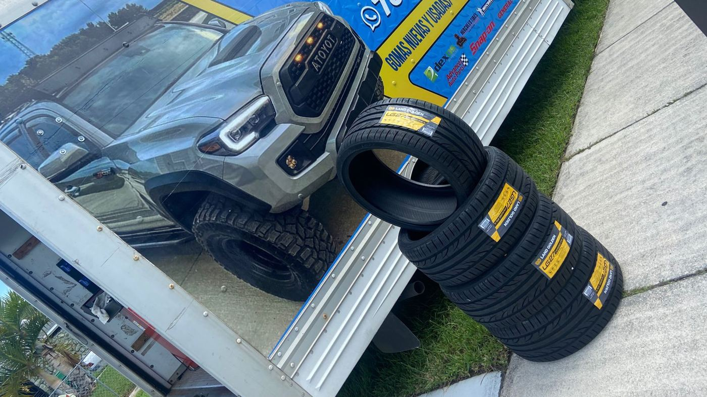
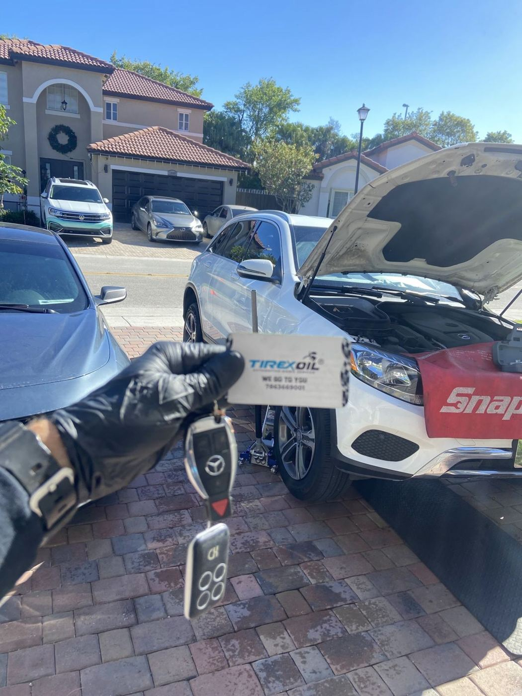
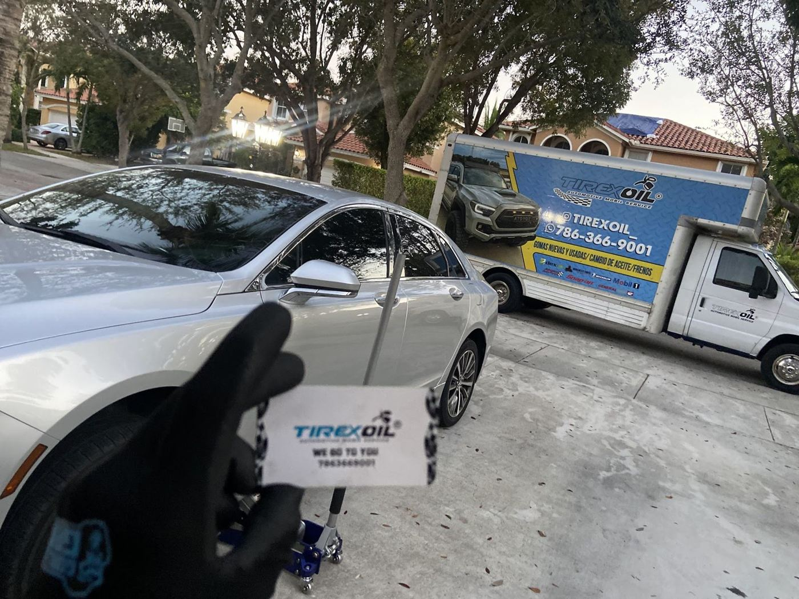
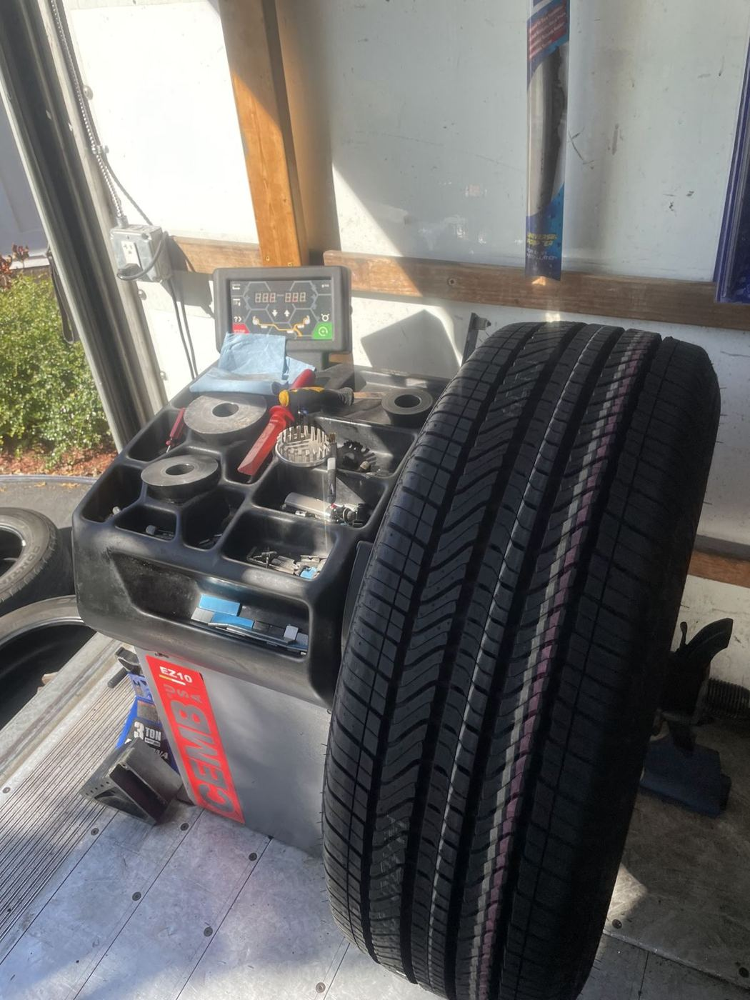
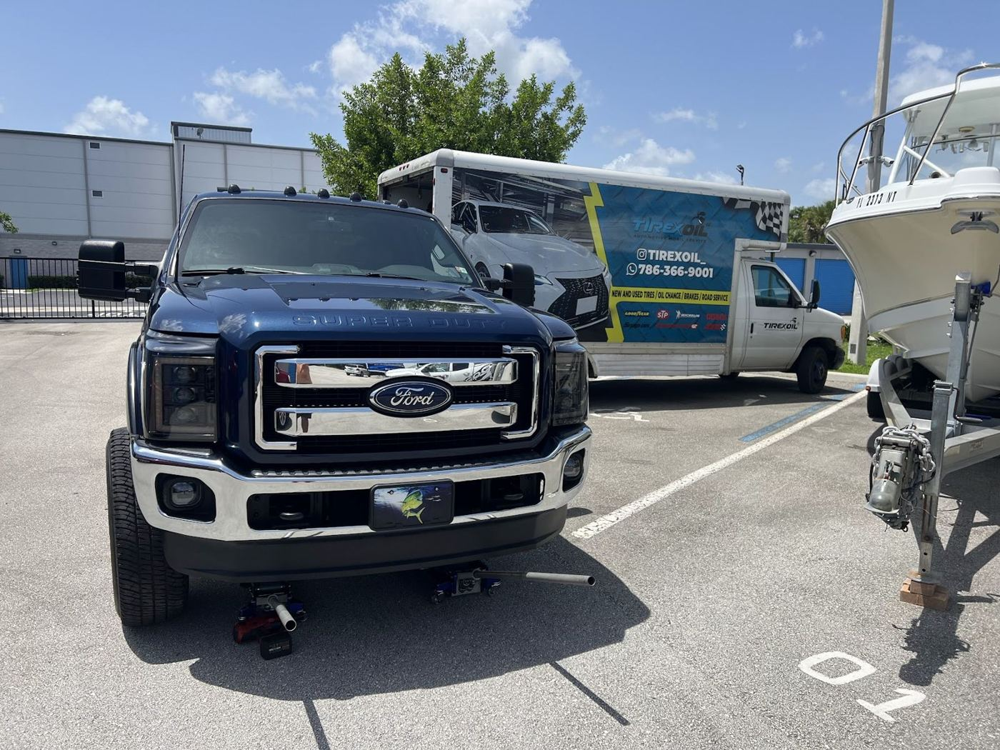
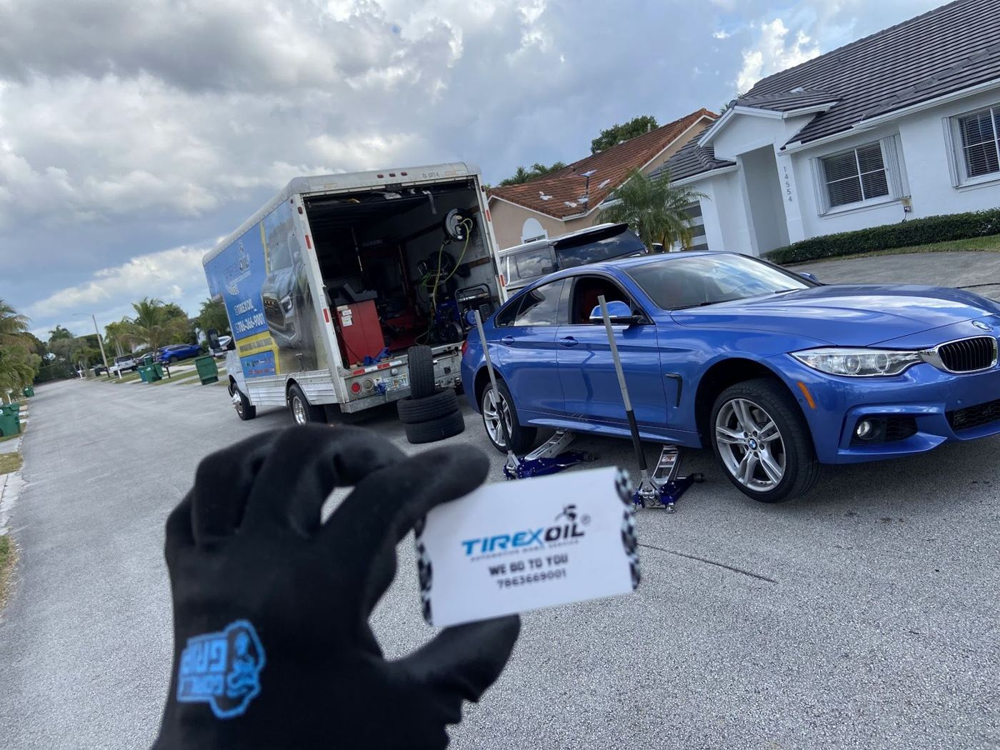

Flat tire? We roll to you.
Mobile tire service across Miami. 4.9★ from 216 Google reviews.
Call (786) 366-9001On-the-spot service
Mobile tire changeThey come to you — new tire on in about 15 minutes
Flat & nail repairEmergency help, fast arrival
New & used tiresFull sets ordered when you need them
Oil changeAs shown on the service truck
BrakesListed on the service truck
7 days a weekWilfredo answers, day or time
Drivers say
Amazing service, showed up fast got the job done extremely quick. Brand new tire on within 15min. Truly a amazing job.
I'm from Brazil and I'm in Miami on vacation. My tire went flat, and they changed it very quickly! I recommend them! The work was sensational! 🙌
Called in due to an emergency with my car, came as soon as he could and fixed our issue very quickly and did a great job. Also was a great price of our issue. Will definitely call again if I have issues with my car again.
If you need help with your car don’t hesitate to call them! Wilfredo will answer you and go above and beyond to help no matter the day or time! They truly care.
I had an excellent experience with Tirexoil Mobile Tire Shop. They arrived promptly, explained everything clearly, and finished the tire replacement efficiently. The convenience and quality of the service really stood out. Highly recommend for anyone needing mobile tire help!
I usually don’t give 5 stars, but this company deserves it. I woke up Tuesday morning to find out that I had a nail inside my tire wall, so I had to change the tire. I ended up ordering all new tires cause my current ones were pealing, and when I called them and spoke to Wilfre, he said that he’ll be able to come out on Friday to give time to receive all tires. He arrived before 9am as promised, and done by 10:30. He was professional, quick & efficient. Will definitely be using them again if needed.
Thank you so much Willy! He’s fast, affordable, and loved the convenience of him coming to the house. Didn’t have to worry about a tire shop being closed at 5 PM. I was able to change my popped tote the same day! I would definitely recommend Tirexoil! ☝️🛞💛
Great service! I was on my way to Miami when my front tire went flat. It was already reaching night time and every place was closed expect tirexoil. The guy gave me a great price for both of my front tires and came to me within 30-40 mins to replace my tires for me outside of a gas station! The guy was great and finished everything in about 15 mins. GREAT SERVICE, GREAT PRICES. Thanks a lot, I really appreciate it!





